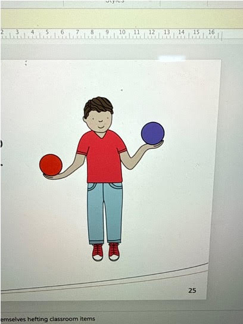
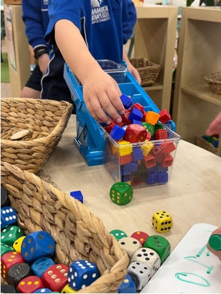
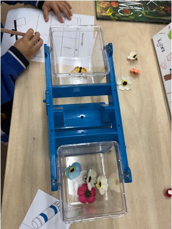
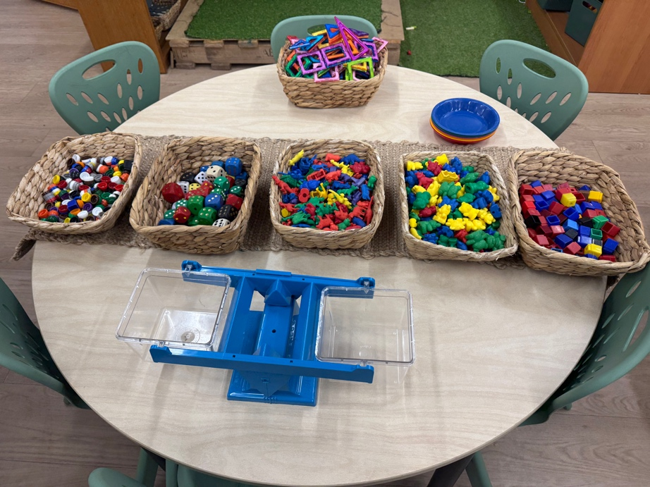
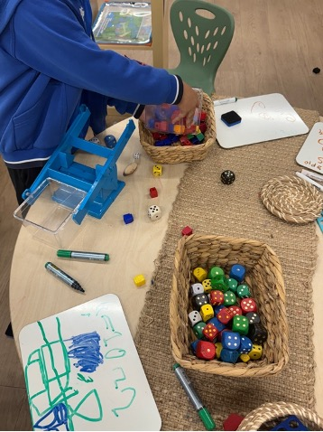
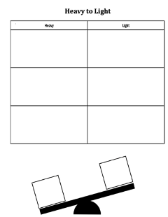
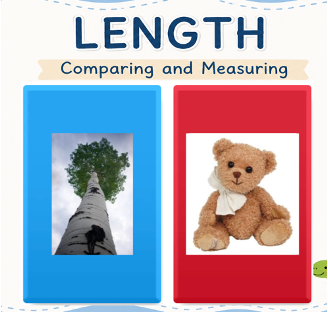
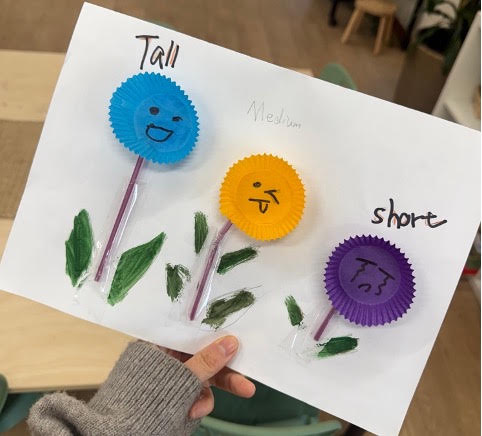

Evidence set 01
Professional Knowledge
Understanding Children and Planning Meaningful Learning
Context for the evidence set
My Reception placement at Kidman Park Primary School involved 23 pupils with varied numeracy readiness and language needs. This set connects individual observation with curriculum planning, assessment and communication with families.
Artefact 1 — Understanding How Children Learn
APST 1.2
Context
Focus Child A could count independently from one to ten but had difficulty representing different combinations that make five. TPA2 records his response to a finger-representation activity, alongside observations of distraction and limited task persistence. I selected this evidence because counting fluently does not, by itself, establish understanding of number composition.
Action
I interpreted the observations using Vygotsky's concept of the Zone of Proximal Development, which I discussed in TPA2 (Vygotsky, 1978). The child's independent counting provided a starting point; guided modelling and concrete representations were proposed to support understanding beyond what he demonstrated independently. Counters, blocks and fingers could make combinations such as four and one or three and two visible. Short, achievable tasks and gradually reduced assistance were intended to support attention and independence. This connects theory to a particular teaching decision rather than assuming that the same activity suits every five-year-old.
Results
The documented outcome was a more specific identification of learning needs: number composition, part–whole relationships, sustained attention and task independence. The evidence supports my interpretation and proposed response. It does not contain follow-up observations establishing that these strategies improved this child's learning.
Evaluation
I learned to distinguish what a child can recite from what the child understands and can represent. My next step is to observe the child making combinations of five with concrete materials and record the prompts needed, explanations offered and level of independence. Comparing these observations with the initial response would help me evaluate the support and decide whether to reduce assistance or change the representation.
Standards
APST 1.2 is addressed through the connection between a research-informed understanding of learning, observation of a child's current understanding and the implications for teaching. The selected TPA2 excerpts make that reasoning visible (Australian Institute for Teaching and School Leadership [AITSL], 2011).
Artefact 2 — Curriculum Planning Through Practical Measurement
APST 2.3
Context
TPA3 presents a Reception measurement unit aligned with AC9MFM01 (Australian Curriculum, Assessment and Reporting Authority [ACARA], n.d.). The selected consecutive lessons progress from identifying measurable attributes and developing vocabulary to comparing mass through hefting and balance scales. The class included EAL learners and children receiving additional support, so access to mathematical language and practical demonstrations informed planning.
Action
I connected curriculum expectations with learning intentions, success criteria, teaching activities and assessment opportunities. Teacher modelling made comparison procedures visible; sentence stems supported explanations of heavier and lighter; partner investigations provided opportunities to apply the concept. Visual supports, repetition and guided questioning supported participation, while ordering several objects and justifying comparisons provided extension. Observation, questioning and a practical checklist were planned to reveal whether children could compare mass and communicate their reasoning. My preschool Balance and Body Control unit provides a further curriculum example linked to EYLF Outcome 3 (Australian Government Department of Education, 2022). Three sessions progress from static balance and simple pathways to narrower surfaces, larger gaps and a combined Sandpit Is Lava course. Observation and children’s demonstrations inform the next level of challenge, while different pathway options support varied confidence and movement skills.
 Figure 1a. Hefting teaching resource. |  Figure 1b. Hands-on balance-scale investigation. |
Results
The unit reflection records children using measurement vocabulary independently and demonstrating full, half full and empty during a water investigation. TPA3 and TPA5 also describe sharing photographs and learning evidence with families through Seesaw. This reporting practice connected the learning intentions with examples of children's participation and achievement, while assessment records informed further support and future planning. These are qualitative observations; they do not establish that every child achieved every outcome.

Figure 2. Balance-scale activity with a recording sheet.
Evaluation
Mentor feedback and student responses showed that resources can influence children's interpretations. Counting pencils or blocks in containers could obscure capacity, while water made the amount held more visible. This strengthened my understanding that curriculum alignment requires assessment and reporting knowledge as well as a content descriptor: evidence must reveal the intended learning and communicate it meaningfully. In future planning, I will check the suitability of resources and use observed misconceptions to adjust the next lesson.
Standards
APST 2.3 is addressed through linked curriculum, sequence, assessment and reporting decisions. The PE unit extends this evidence to a preschool framework and observation-informed planning (AITSL, 2011).
Selected source evidence
Read the supporting source excerpts
These excerpts support the numbered artefacts above. They are drawn from the supplied placement documents; layout has been adapted for readability. Original sources remain in originalHomework and report. Source excerpts are separate from the annotation prose.
Artefact 1 — Observation, interpretation and proposed support
Source: TPA2-JiZhou.pdf, pages 5–7
Focus Child A Profile Focus Child A is a 5 years old boy in the reception class. He presents emerging skills in both literacy and numeracy. Observations According to observations in classroom, focus Child A : He is able to count from 1 to 10 without any external help; however, he struggles with addition and subtraction within this range. He is easily distracted during explicit teaching and structured learning activities, having difficulty maintaining attention . During task engagement, he may show limited participation or complete tasks with a low level of accuracy and patience. For example, during a morning routine activity, the teacher asked students to represent the number 5 with their fingers. Focus Child A can’t respond timely and accurately. Even though he recognises that one hand has 5 fingers. He reacted slow to break numbers apart and put them back together (e.g., 4 + 1, 3 + 2), which shows he has a weak understanding of part–whole relationships. Assessment Interpretation These observations suggest that the child is currently at an early stage of numeracy development, specifically in the areas of number composition and early addition. While he has developed basic counting ability, he requires further support in understanding how numbers can be broken apart and combined as well as part–whole relationships. In addition, his limited attention span and frequent distraction show that he may struggle to engage with structured learning tasks, which may impact his overalllearning experience and outcome. His inconsistent participation and low level of independence further suggest that he benefits from guided support and structured, scaffolded learning experiences that are broken into short and manageable steps to support task engagement, which relates with Lev Vygotsky’s concept of the Zone of Proximal Development, where appropriate scaffolding can support the child’s progression from current understanding to more advanced skills. (APST 1.2, 5.1) Learning Needs Therefore, the child’s learning needs include: • Development of number composition and part–whole understanding • Support in early addition & subtraction concepts and through concrete experiences • Improvement in sustained attention and task engagement • Opportunities to develop independence in completing learning tasks Teaching Strategies To support this child, the following strategies will be implemented: • Use of hands-on manipulatives (e.g., counters, blocks, fingers) to support understanding of number composition and addition • Provide explicit teaching and modelling of part–whole relationships (e.g., demonstrating 5 as 4 + 1, 3 + 2) • Implement play-based and 1v1 learning activities to increase engagement and reduce distraction • Break tasks into short, achievable steps to support attention and task completion • Offer guided support and scaffolding, gradually reducing assistance to build independenceThese strategies aim to provide tailored support and promote the child’s ongoing development in both numeracy and learning engagement. (APST 1.5, 3.3) Ongoing observations and formative and informal assessment will be used to monitor Focus Child A’s progress and keep him on track. Meanwhile ,these will also be applied to evaluate the effectiveness of teaching strategies and inform ongoing adjustments to teaching practices. (APST 5.4)
Artefact 2 — Curriculum planning and reporting
Source: TPA3 measurement-1.docx. The class size in the selected context is corrected to 23, as confirmed by the author.
Mathematics | |||
Year Level: Reception Year Term: 2 Length of Unit: Week3&4 | |||
Context | The observed class is a Reception class, consisting of 23 students aged between four and five years. The class presents a highly diverse background, with 2 students requiring SSO support and 5 students identified as English as an Additional Language(EAL) learners. This diversity is particularly evident in students' early numeracy development(APST1.1,1.3,1.5). Students in this class show a wide range of mathematical understanding. Some children can perform addition and subtraction beyond 20 and can recognize numbers up to 100 within a very short time, while others are still developing foundational skills, such as counting to 10 and recognizing numerals with confidence(APST 1.1,1.5). | ||
Content Strand | Measurement | General Capabilities and Cross Curriculum Priorities | Numeracy Literacy Critical and Creative Thinking Personal and Social Capability |
Content Descriptors | • AC9MFM01 – identify and compare attributes of objects and events, including length, capacity, mass and duration, using direct comparisons and communicating reasoning. |
Proficiency Strands | Achievement Standard |
Understanding Students understand that objects can be compared using measurable attributes such as mass, length, and capacity. Fluency Students use mathematical vocabulary such as heavy, light, taller, shorter, and full to describe and compare objects. Reasoning Students explain their thinking when comparing objects and justify why one object may be heavier or lighter than another. Problem Solving Students investigate and compare real-life objects using direct comparison strategies and hands-on materials. | By the end of the unit, students identify and compare measurable attributes of familiar objects using direct comparison. Students use mathematical language to explain their observations and reasoning during hands-on investigations. |
Unit Key Ideas and Outcomes | ||
Lesson | Key Content / Nouns and verbs - implications | How will you know students have achieved the required learning? |
1: | Introducing measurement vocabulary and measurable attributes through real-life objects and discussion. | Students can identify and describe different attributes of familiar objects using mathematical language during class discussions and hands-on activities. |
2: | Exploring mass using direct comparison and the vocabulary heavy, light, heavier, and lighter. | Students can compare familiar objects and explain whether an object is heavier or lighter using appropriate mathematical vocabulary. |
3: | Comparing mass through practical investigations using hefting and balance scales. | Students can use direct comparison strategies to compare mass and explain their thinking during practical investigations and whole-class discussions. |
4: | Applying understanding of mass through collaborative sorting and food investigation activities. | Students can sort objects into heavy and light categories and justify their decisions using mathematical vocabulary and sentence stems. |
5: | Developing mathematical communication using sentence stems and reflective discussion. | Students can communicate mathematical thinking using appropriate measurement vocabulary during partner and whole-class discussions. |
6: | Demonstrating understanding of measurement concepts through practical assessment tasks. | Students independently compare familiar objects using direct comparison and communicate reasoning using appropriate mathematical language. |
Differentiation Consideration(APST1.3,1.5,1.6) |
Visual supports and modelling will be used to support EAL learners and students requiring additional assistance. Hands-on manipulatives and practical investigations will support kinaesthetic learners and students developing foundational numeracy skills. Students will be paired strategically to encourage peer support and collaborative learning. Open-ended questioning and investigation tasks will provide extension opportunities for students demonstrating advanced mathematical understanding. Teacher guidance, repetition, and sentence stems will be provided to support students’ mathematical communication and reasoning. |
Lesson | Focus + Activities (3 to be detailed – must be consecutive) | Teaching Resources | Time |
1 | Lesson Focus: Introducing measurement vocabulary and measurable attributes through discussion and hands-on exploration. Learning Intention: Students will identify measurable attributes such as heavy/light, tall/short, and big/small using familiar classroom objects. Success Criteria: I can describe objects using measurement words. I can compare familiar objects. I can explain my thinking using mathematical language. 1. Whole-class teaching and discussion (20 mins) Invite students to the mat area. Introduce the concept of measurement using familiar classroom objects. Read sections of A Pig is Big and discuss the meaning of “big”. Explore measurable attributes including: big/small tall/short heavy/light full/empty Use questioning and classroom discussion to explore whether big always means heavy or tall. Introduce measurement vocabulary through visual examples and interactive discussion. 2. Teacher modelling (5–10 mins) Model how to compare objects using mathematical language. Demonstrate comparing classroom objects using sentence stems such as: “This object is heavier than…” “This object is taller than…” Think aloud to model mathematical reasoning and observation skills. 3. Independent / partner investigation task (20 mins) Students work independently or with a partner to explore and compare classroom objects. Students sort objects based on different measurable attributes. Students discuss observations using teacher-supported sentence stems. Teacher circulates, questions students, and records observational notes. Differentiation Support: Visual supports and modelling provided for EAL learners. Sentence stems provided during discussion tasks. Teacher and SSO support during investigations. Extension: Students explain and justify comparisons using mathematical vocabulary. Students compare multiple attributes independently. (APST 1.1,1.3,1.5,2.1,3.1,3.2) | Interactive whiteboard A Pig is Big storybook Classroom objects for comparison Picture cards Measurement vocabulary visuals Sorting materials | 50 mins |
2 | Lesson Focus: Developing an understanding of mass through direct comparison and hands-on investigation. Learning Intention: Students will explore the concept of mass and compare objects using the vocabulary heavy and light. Success Criteria: I can describe objects as heavy or light. I can compare two objects. I can explain my thinking using mathematical language. 1. Whole-class teaching and discussion (20 mins) Invite students to the mat area. Recall the previous lesson about measurable attributes. Introduce the concept of mass using classroom objects and discussion. Read sections of Balancing Act and discuss which animals were heavy or light. Introduce and discuss vocabulary including: heavy light heavier lighter Explore whether large objects are always heavy through questioning and discussion. Introduce direct comparison using familiar classroom objects. 2. Teacher modelling (5–10 mins) Model how to compare two objects using hands and classroom materials. Demonstrate “hefting” by holding objects and thinking aloud. Model sentence stems such as: “The ___ is heavier than the ___.” “The ___ is lighter than the ___.” Demonstrate how to explain reasoning during comparison tasks. 3. Independent / partner investigation task (20 mins) Students work independently or with a partner to compare classroom objects. Students use hefting strategies to investigate which objects are heavy or light. Students sort objects into heavy/light categories. Students practise explaining comparisons using sentence stems. Teacher circulates to observe, question students, and provide support where required. Differentiation Support: Visual supports and repeated modelling provided for EAL learners. Sentence stems and guided questioning used during investigations. Teacher and SSO support provided during comparison tasks. Extension: Students explain why objects may feel heavier or lighter. Students independently compare multiple objects and justify reasoning using mathematical vocabulary. (APST 2.1, 2.2, 2.5, 3.1, 3.2) | Interactive whiteboard Balancing Act storybook Classroom objects with different masses Heavy/light sorting materials Measurement vocabulary visuals Sentence stem cards | 50mins |
3 | Lesson Focus: Exploring and comparing mass through practical investigations using balance scales and hands-on materials. Learning Intention: Students will use direct comparison strategies to compare the mass of familiar objects. Success Criteria: I can compare objects using balance scales or hefting. I can describe objects as heavier or lighter. I can explain my thinking using mathematical language. 1. Whole-class teaching and discussion (20 mins) Invite students to the mat area. Recall vocabulary from previous lessons including: heavy light heavier lighter Revise the concept of mass through questioning and discussion. Introduce balance scales and discuss how they help compare mass. Demonstrate how balance scales move when one object is heavier or lighter. Discuss what it means when the scale balances equally. Explore examples using familiar classroom or food objects. 2. Teacher modelling (5–10 mins) Model how to use balance scales safely and correctly. Demonstrate comparing two objects using both hefting and balance scales. Model mathematical language and sentence stems such as: “The ___ is heavier than the ___.” “The ___ is lighter than the ___.” “These objects balance equally.” Think aloud to model reasoning and observation skills. 3. Independent / partner investigation task (20 mins) Students work independently or with a partner to investigate and compare different objects using balance scales. Students sort and compare objects based on mass. Students record or verbally explain findings using mathematical vocabulary and sentence stems. Teacher circulates to observe understanding, ask questions, and record assessment notes. Differentiation Support: Visual supports, modelling, and guided questioning provided for EAL learners and students requiring additional assistance. Teacher and SSO support during practical investigations. Sentence stems provided during partner discussions. Extension: Students compare more than two objects and order them from lightest to heaviest. Students explain why balance scales move in different ways using mathematical reasoning. (APST 2.1,2.2,2.5,3.2) | Balance scales Classroom and food objects with different masses Interactive whiteboard Sentence stem cards Measurement vocabulary visuals Sorting trays or baskets | 50mins |
Assessment – Formative (F)/Summative (S)(APST 5.1,5.2) |
Formative Assessment Whole-class discussions and questioning during lessons Observation of students during hands-on investigations Monitoring students’ use of measurement vocabulary and sentence stems Teacher anecdotal notes during partner and independent activities Observation of students comparing and sorting objects using direct comparison strategies Summative Assessment Practical investigation task using balance scales and classroom objects Heavy/light sorting activity Student explanations and demonstrations of mathematical reasoning Teacher checklist assessing students’ ability to compare mass and communicate understanding using appropriate mathematical language |

Supporting image A. Materials prepared for comparing mass.
 Supporting image B. Practical scale activity. |  Supporting image C. Heavy/light recording template. |
 Supporting image D. Length comparison teaching prompt. |  Supporting image E. Tall, medium and short work sample. |
Source: TPA3, Reflection and Insights
The approach to student learning monitoring involved observation, questioning, discussion, practical investigations and formative assessment opportunities throughout the unit. Evidence of learning was shown as students started to engage with measurement vocabulary independently, in activities and discussions. The transparent cup and water-based capacity investigation was really a success. Pupils could show their understanding of empty, half full and full, they could follow teacher's instructions and adjust the level of water in their cup accordingly. Students' level of understanding and engagement was evident in this activity. Families were also given opportunities to celebrate and communicate student learning by sharing photos of each step of the investigation with them via Seesaw.(APST5.1,5.2,3.7)
Source: TPA5, Formative Assessment
Student learning was documented through worksheets, practical activities, photographs, teacher observation notes and assessment checklists. Photographs and learning evidence, including the water capacity investigation, were regularly shared with families through Seesaw to communicate student progress and celebrate learning achievements. Maintaining accurate assessment records also informed future planning, differentiation and reporting of student achievement. (APST 5.5)Information from these formative assessment opportunities guided the teacher's ongoing planning and differentiation and feedback given to students during the unit.(APST 5.4,3.6)
Supporting source for Artefact 2: PE unit plan — Overview
OverviewThis three-session Balance and Body Control unit is designed for children aged 3–4 years in a preschool setting. It builds on children’s interest in active outdoor play, such as climbing, stepping and moving across different surfaces, while recognising that balance skills and confidence can vary within this age group. The unit focuses on static and dynamic balance, body control and coordination. The learning experiences become gradually more challenging across the three sessions. Session 1 gives children time to explore basic balance skills using stable and low-level equipment. In Session 2, the challenge increases through narrower surfaces, larger gaps, changes in direction and movement between different surfaces. Session 3 brings these skills together in Sandpit Is Lava, where children move through a continuous course without stepping onto the sand. This progression gives children opportunities to first explore balance, then adapt their movements, and finally apply their skills more independently.The unit is closely connected to EYLF V2.0 Outcome 3: Children have a strong sense of wellbeing. Outcome 3 includes the development of gross motor skills, balance, coordination and children’s ability to move confidently and safely through different environments (Australian Government Department of Education [AGDE], 2022). Play is central to how these skills are developed throughout the unit. Petrie and Clarkin-Phillips (2018) highlight the value of active exploration in early childhood physical education, particularly when children have opportunities to engage with movement according to their abilities and interests. However, in activities like Sandpit Is Lava, the purpose of maintaining balance is clear – children have to figure out how to get from one spot to another without treading on the sand. The imaginative context prompts them to develop and play a balance skill instead of just practising the balance movement.The progression across the three sessions is also informed by an ecological view of motor development. Gagen and Getchell (2018) explain that movement develops through interactions between the individual, the task and the environment. Changes to the environment can therefore influence the movement strategies children use. This is reflected in the way challenge is adjusted across the unit. A child may begin by walking along a wide, stable surface and later try a narrower surface or step across a larger gap. Changes in surface width, distance, direction and transitions create new movement problems without changing the overall focus on balance. Children have time to develop strategies under simpler conditions before using them in the more complex final course.The level of challenge is also flexible because children of the same age may have different levels of physical competence and confidence. The EYLF encourages educators to provide environments that offer challenges appropriate to children’s abilities (AGDE, 2022). Opportunities to experience physical challenge are also important because play allows children to test their physical limits and develop perceptual-motor ccapacity (Brussoni et al., 2012). Children who are still developing confidence can choose a wider surface, a smaller gap or a shorter pathway, while others may choose a narrower surface, increase the distance between stepping points or include more changes in direction. Research on risky outdoor play also highlights the value of children being able to recognise and evaluate physical challenges and decide how to respond (Brussoni et al., 2015). Giving children these choices allows them to participate in the same experience at a level that is challenging but manageable for them. It also supports agency by giving children opportunities to make decisions about their own movement (AGDE, 2022). Educator support remains available when required.Assessment occurs throughout the three sessions through observation, questioning and children’s demonstrations. The educator can observe strategies such as slowing down, using arms for stability, changing foot placement or adjusting the size of a step. These observations are then used to plan the next level of challenge. For example, evidence from Session 1 can inform the equipment and difficulty offered in Session 2, while Session 2 observations can guide the different pathway options available in Sandpit Is Lava. This is consistent with assessment for learning, where information about what children know, understand and can do is used to inform ongoing pedagogy and planning (AGDE, 2022). Short questions such as “What helped you stay balanced?” also encourage children to recognise and communicate their own movement strategies, linking with assessment as learning (AGDE, 2022). By Session 3, the educator can observe how independently children select, adjust and combine these strategies within a continuous movement challenge.
References
Australian Curriculum, Assessment and Reporting Authority. (n.d.). Australian Curriculum, Version 9.0. https://v9.australiancurriculum.edu.au/
Australian Government Department of Education. (2022). Belonging, being and becoming: The early years learning framework for Australia (V2.0).
Australian Institute for Teaching and School Leadership. (2011). Australian professional standards for teachers. https://www.aitsl.edu.au/standards
Vygotsky, L. S. (1978). Mind in society: The development of higher psychological processes. Harvard University Press.
Original document
Download Evidence Set 1 (Word document)
The download includes the annotations, source excerpts, in-text citations and references.